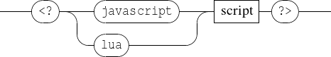

Score expressions allows to defines score objects (gmn or pianoroll) by dynamically combine various resources using a formal expression. To define such object one should use the basic set messages using a score expressions as arguments:
EXAMPLE
The following example defines a gmn and a pianoroll object using score expressions, the meaning of the
expression is explained further.
A score expression always starts with expr( and ends with ), then 2 syntaxes are handled:
Each of these tokens can, of course, be separated by spaces, tabulations or carriage returns (allowing multiline expression definition).
When defining an object using a score expressions, INScore will parse it, construct an internal representation and finally evaluate it, reducing the formal expressions to a valid GMN string.
EXAMPLE
Creating a guido object by sequencing two guido string
is equivalent to
All the score operators of INScore make use of guido operators implemented in the GuidoAR library.
| operation | arguments | description |
| seq | s1 s2 | puts the scores s1 and s2 in sequence |
| par | s1 s2 | puts the scores s1 and s2 in parallel |
| rpar | s1 s2 | puts the scores s1 and s2 in parallel, right aligned |
| top | s1 s2 | takes the n first voices of s1 where n is s2 voices count |
| bottom | s1 s2 | cut the n first voices of s1 where n is s2 voices count |
| head | s1 s2 | takes the head of s1 up to s2 duration |
| evhead | s1 s2 | takes the n first events of s1 where n is the event’s count of s2 |
| tail | s1 s2 | cut the beginning of s1 up to the duration of s2 |
| evtail | s1 s2 | cut the n first events of s1 where n is the event’s count of s2 |
| transpose | s1 s2 | transposes s1 so its first note of its first voice match s2 one |
| duration | s1 s2 | stretches s1 to the duration of s2 |
| if not used carefully, this operator can output impossible to display rhythm | ||
| pitch | s1 s2 | applies the pitches of s1 to s2 in a loop |
| rhythm | s1 s2 | applies the rhythm of s1 to s2 in a loop |
The syntax for arguments is quite permissive and various resources can be used as arguments for score expressions. In any case, when evaluating the expression, all the arguments will be reduce to GMN string so they can then be processed by the operators.
EXAMPLE
Defining /ITL/scene/score as a copy of /ITL/scene/simpleScore duplicated 4 times.
/ITL/scene/score should look like:

Querying for the expanded expression of /ITL/scene/score (see Section 18.4) should return:
NOTE ON ARGUMENTS QUOTING
Arguments using special characters (space, tabulation, parenthesis, braces...), should be simple or double quoted,
otherwise quotes can be omitted.
ITLObject defined using an evaluable expression gain access to these specific commands:
Applied to an object which wasn’t defined by an evaluable expression, all this commands will cause a bad argument error.
The renew command reset the internal state of the evaluated variable, forcing the re-evaluation and update of every arguments in the expression. Be aware that the track of copy evaluated arguments is lost after the first evaluation, thus renewing an expression defined using copy evaluated arguments won’t update these arguments to their targeted ITLObject expression. Though, static arguments added by the copy shall be renewed.
newData is triggered by any object when its value change (generally because of a set message). Neither trying to set an object to its actual value without changing its type, nor re-evaluating an object to its actual value will trigger newData.
Of course, the newData event can be used together with reeval to automatically update an object when the value of an other changes.
EXAMPLE
Creating a copy of score, and automatise its update when score is changed
To avoid infinite loop when using recursion, newData event is delayed of one event loop, meaning that, in the previous example, during the event loop that follow score’s modification, score and copy are different (copy has not been updated yet...).
NOTE
Because newData event is delayed, if score experiences multiple modifications during the same event loop
(because multiple set messages have been sent together), only his final value will be accessible when
newData will be actually triggered, however the event will be sent as many times as score have been
modified.
NOTE WHEN AUTOMATISING UPDATE
For the reasons raised in the previous note, one should be very careful to delayed update when automatise reeval
with newData. Indeed, in some extreme case, executing a script one line after an other won’t have the same result as
executing the all script at once!!
EXAMPLE
Creating a "score buffer", storing every state adopted by score
Won’t have the same result if run line by line, or the all script as once:
Line by line:
All script at once:
To avoid such undeterministic behaviour, one should, in this case, manually trigger reeval after each modification of score.